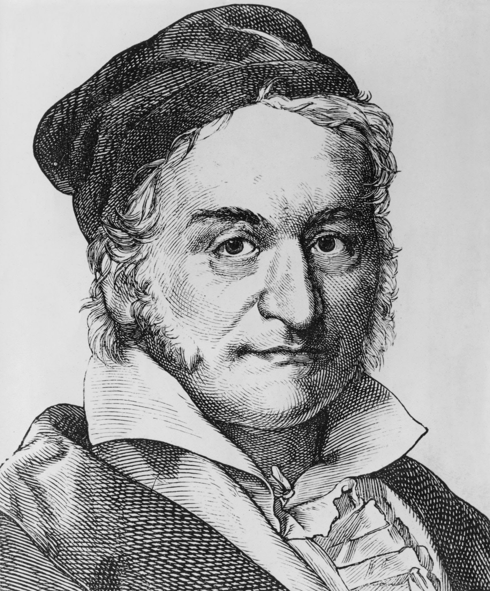
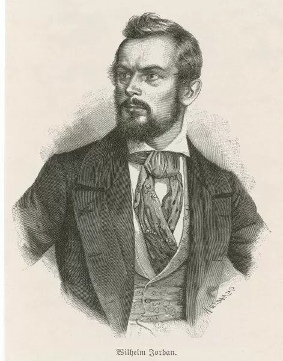
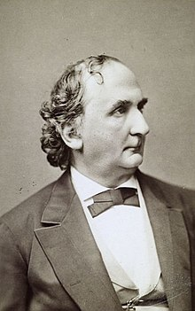
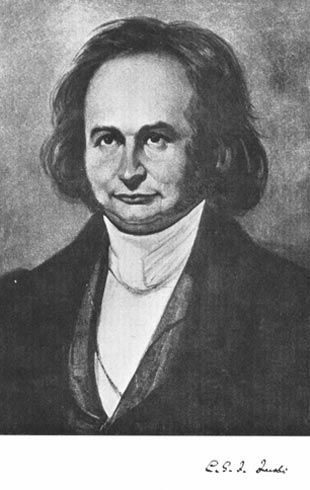

Gauss
Gauss-Jordan Method
Carl Friedrich Gauss in 1810 devised a notation for symmetric elimination that was adopted in the 19th century by professional hand computers to solve the normal equations of least-squares problems. In 1888, Wilhelm Jordan discovered a way to extend Gaussian Elimination, so mathematicians have named the process Gauss-Jordan Elimination. Gauss-Jordan Elimination involves using elementary row operations to write a system or equations, or matrix, in reduced-row echelon form.
Gauss-Jordan Elimination is an algorithm that can be used to solve systems of linear equations and to find the inverse of any invertible matrix. It relies upon three elementary row operations one can use on a matrix.
The Gauss Jordan Elimination's main purpose is to use the 3 elementary row operations on an augmented matrix to reduce it into the reduced row echelon form (RREF). A matrix is said to be in reduced row echelon form, also known as row canonical form.
Gauss
Jordan
Gauss-Jacobi and Gauss-Seidel Methods
or Iteration Methods
In numerical linear algebra, the Gauss-Seidel method, also known as the Liebmann method or the method of successive displacement, is an iterative method used to solve a system of linear equations. It is named after the German mathematicians Carl Friedrich Gauss and Philipp Ludwig von Seidel, and is similar to the Jacobi method. Though it can be applied to any matrix with non-zero elements on the diagonals, convergence is only guaranteed if the matrix is either strictly diagonally dominant, or symmetric and positive definite.
The Gauss-Seidel method is the modification of the gauss-iteration method.This modification reduces the number of iteration. In this methods the value of unknown immediately reduces the number of iterations, the calculated value replace the earlier value only at the end of the iteration. .Because of it, the gauss-seidel methods converges much faster than the Gauss methods. In gauss seidel methods the number of iteration method requires obtaining the solution is much less as compared to Gauss method.
The difference between the Gauss-Seidel and Jacobi methods is that the Jacobi method uses the values obtained from the previous step while the Gauss-Seidel method always applies the latest updated values during the iterative procedures.
The reason the Gauss-Seidel method is commonly known as the successive displacement method is because the second unknown is determined from the first unknown in the current iteration, the third unknown is determined from the first and second unknowns, and so on.
Seidel
Jacobi
